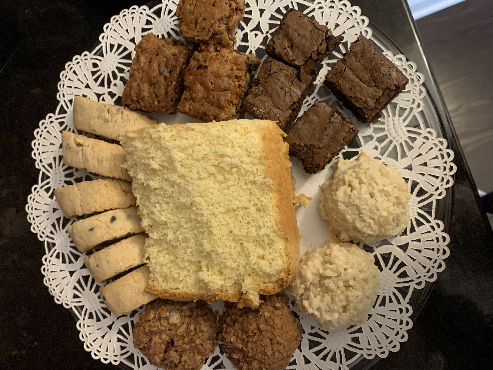
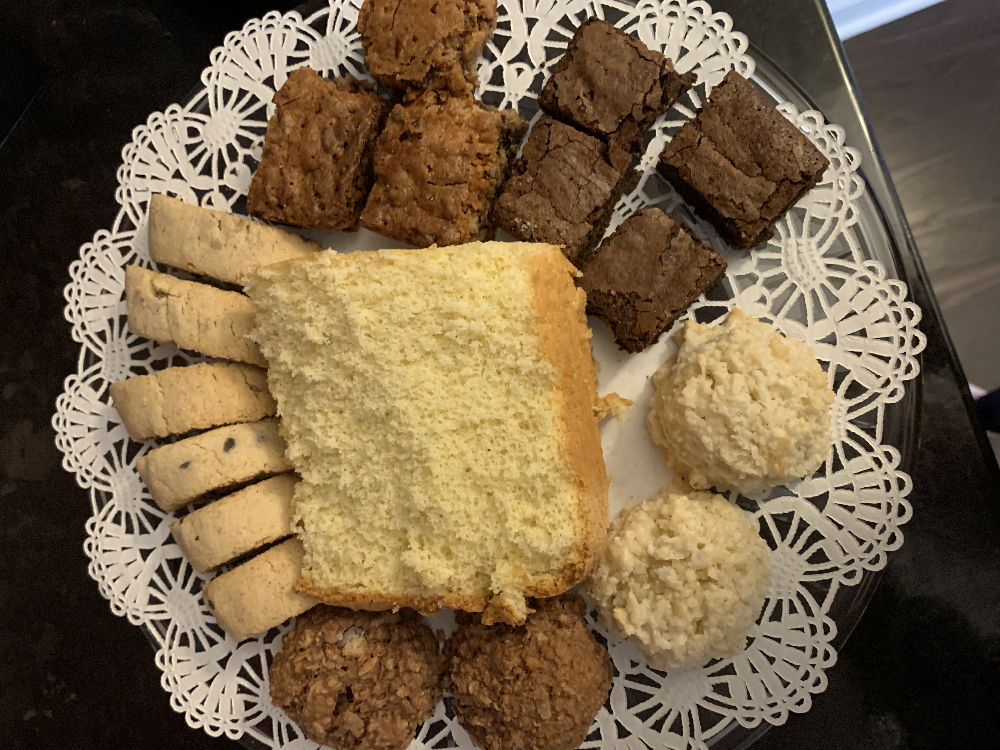

Outside of school and academics, I have two main passions: dance and food.
I have been dancing since I was 3 years old. My parents (against my will) enrolled me in ballet classes at a very young age, and I ended up loving it. At 6 years old, I started to explore other styles of dance, like modern and hip-hop. I quickly fell in love with hip-hop and have been with that style since then. Dancing throughout the years has brought me so much joy and has provided me with a space to be creative and to have fun. Shown above are some images of my dances throughout my life.
------------------------------------

 

I also love to eat and to bake! I think that food is one of the most fun and enjoyable parts of life. It brings people together and has no rules or boundaries. For as long as I can remember, baking has been such a big part of my life. Between my mom and my grandma, there is always some fresh treat around! Shown above are some baked goods that I've made in the recent past.